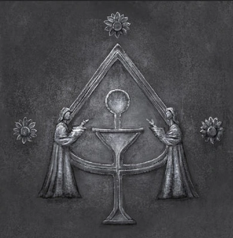
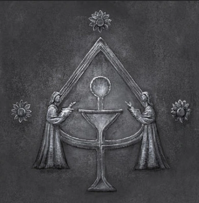
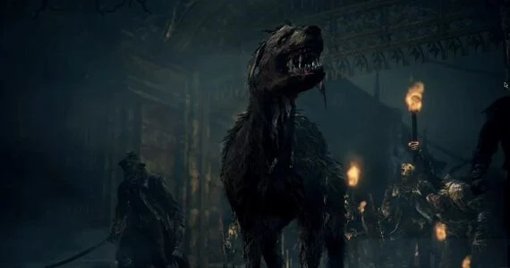
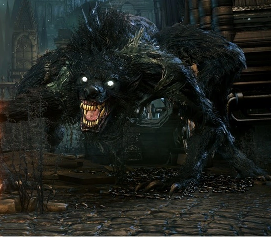

Think on human history, imagine in any era a church was founded in a city that distributed a healing substance that heals any illness freely throughout the city. Think how powerful that city and the church within it would become that is exacly what happened in Yharnam. People came from far and wide to be treated by the blood of the gods, in fact they produced more blood then alcohol as the former is more intoxicating.
Yet, the focus of the Healing Church was to communion in hopes to accend humanity to a higher plain this duty was done by the Choir the first branch of the Healing Church.The Choir was made up of the highest ranking clerics of the church who continued the work that begun in Byrgenwerth. Eventually parts of the Choir split of to a group of scholars under the name the School Of Mensis the second branch of the Healing Church.It was the duty of the school to uncover the secrets and nature of the Great Ones and how to use them towards the advantage of humanity. The Healing Church roled over Yharnam for years and the city grew prosperus from it. However, the people of Yharnam and the church soon found out the price of consuming the Old Blood.
 Far too late after the Healing Churches foundation, it was discovered that the meraculous healing blood was tainted to not only cause maddness, but changed the people of Yharnam into hideous beasts. At first the healing church was able to keep the beastly scourge quiet as they began the Hunters Workshop lead by Gehrman the first hunter. Every night Gehrman and his hunters would set out in Yharnam hunting the beasts in in the cover of the darkness, yet as the church continued the supply of the old blood more and more people sucome to the scourge of the beast. Yharnam became so rampid and abundon with beasts the healing church set a blaze to what would become old Yharnam just to hold back the beasts.